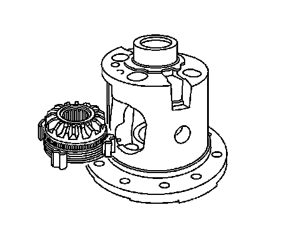

Locking Differential Assemble (9.5 Inch Axle)
Locking Differential Assemble (9.5 Inch Axle)
Important: The left and right side gear backlash and thrust block thickness measurement must be completed before the components of the locking differential can be assembled.

1. Install the left side gear thrust washer.

2. Install the left side gear cam unit and clutch disc assembly.
3. Install the right side gear thrust washer.
4. Install the right side clutch disc assembly.
5. Install the right side gear.
Important: If the original pinion gears and thrust washers are being re-used, install the pinion gears and thrust washers on the same side as when removed.
6. Install the pinion gear and the pinion thrust washers.
Place the pinion gears and the pinion thrust washers 180 degrees apart.
7. Rotate the pinion gears and the pinion thrust washers 90 degrees and align the pinion gears with the pinion shaft opening in the differential case.
8. Install the thrust block.
The open side of the thrust block must face the window opening.
9. Install the pinion shaft.
10. Install the new pinion shaft lock bolt.
Notice: Refer to Fastener Notice
Tighten the pinion shaft lock bolt finger tight.
11. Install the governor assembly.
12. Install the governor bushing using a hammer and a brass drift.
Press the bushing into place until there is 0.025-0.076 mm (0.010-0.030 in) of shaft end play.
13. Install the latching bracket assembly.
The straight end of the latching bracket spring must be over and outside the governor assembly shaft.
14. Install the latching bracket bushing using a hammer and a brass drift.
Press the bushing into place until there is 0.000-0.051 mm (0.000-0.002 in) of shaft end play.
15. Tighten the pinion shaft lock bolt.
^ For the 8.6 inch axle, tighten the pinion shaft lock bolt to 36 Nm (27 lb ft).
^ For the 9.5 inch axle, tighten the pinion shaft lock bolt to 50 Nm (37 lb ft).
16. Install the ring gear, if necessary.